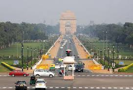
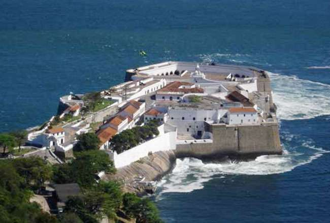

Sr.No.
Union Territory
Capital
Establishment
1
Andaman and Nicobar Islands

Port Blair
1 November 1956
2
Chandigarh

Chandigarh
1 November 1966
3
National Capital Territory of Delhi

New Delhi
1 February 1992
4
Dadra and Nagar Haveli

Silvassa
11 August 1961
5
Daman and Diu

Daman
30 May 1987
6
Lakshadweep

Kavaratti
1 November 1956
7
Puducherry